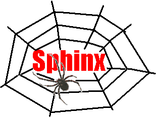

WebSPHINX:
A Personal, Customizable Web Crawler
Contents
WebSPHINX ( Website-Specific Processors for HTML
INformation eXtraction) is a Java class library and interactive
development environment for web crawlers. A web crawler (also called a
robot or spider) is a program that browses and processes Web pages automatically.
WebSPHINX consists of two parts: the Crawler Workbench and the WebSPHINX
class library.
Crawler Workbench
The Crawler Workbench is a graphical user interface that lets you configure
and control a customizable web crawler. Using the Crawler Workbench, you
can:
- Visualize a collection of web pages as a graph
- Save pages to your local disk for offline browsing
- Concatenate pages together for viewing or printing
them as a single document
- Extract all text matching a certain pattern from
a collection of pages.
- Develop a custom crawler in Java or Javascript that
processes pages however you want.
WebSPHINX class library
The WebSPHINX class library provides support for writing web crawlers
in Java. The class library offers a number of features:
- Multithreaded Web page retrieval in a simple
application framework
- An object model that explicitly represents pages
and links
- Support for reusable page content classifiers
- Tolerant HTML parsing
- Support for the robot exclusion standard
- Pattern matching, including regular expressions,
Unix shell wildcards, and HTML tag expressions. Regular
expressions are provided by the Apache jakarta-regexp regular expression
library.
- Common HTML transformations , such as concatenating
pages , saving pages to disk, and renaming links
First, you need Java 1.2 or later installed on your computer. If you're
not sure, try running java -version. If you need to install Java
on Windows, Linux, or Solaris, go directly to Sun; for other platforms, consult
the list of Java
ports.
If your computer has AFS access, run java -jar /afs/cs.cmu.edu/user/rcm/www/websphinx/websphinx.jar
If you don't have AFS, you'll need to download this JAR file:
websphinx.jar
and then run java -jar websphinx.jar
The Crawler Workbench will appear in a new window.
Examples
Here are some things to try in the Workbench.
- Visualize part of the Web as a graph
- This crawler retrieves the WebSPHINX pages
you've been reading and renders them as a graph of pages and links.
-
-
Crawl
|
the subtree
|
URL
|
http://www.cs.cmu.edu/~rcm/websphinx
|
Action
|
none
|
|

|
-
-
- Save pages to disk
- This crawler retrieves the SCS Technical Reports
index, which consists of about 30 pages, and saves it to a directory
on your local disk.
-
Crawl
|
the subtree
|
URL
|
http://reports-archive.adm.cs.cmu.edu/cs.html
|
Action
|
save
|
Directory
|
./scs-techreports
|
|
|
-
- Concatenate pages for printing
- This crawler concatenates all the pages in Bob Harper's Introduction to SML into
a single massive page, suitable for printing.
-
-
Crawl
|
the subtree
|
URL
|
http://www.cs.cmu.edu/~rwh/introsml/
|
Action
|
concatenate
|
File
|
./intro-sml.html
|
|
-

|
-
-
- Extract images from a set of pages
- This crawler surfs over a few pages of Dr. Fun logos and generates
a new page containing all the logos found.
-
-
Crawl
|
the subtree
|
URL
|
http://sunsite.unc.edu/Dave/logos.htm
|
Action
|
extract
|
Pattern
|
<a>(?{logo}<img>)<p>(?{caption})</a>
|
| File |
./dr-fun.html
|
|
-
-

|
Frequently Asked Questions
- Who is WebSPHINX intended for?
- WebSPHINX is designed for advanced web users and Java programmers who
want to crawl over a small part of the web (such as a single web site)
automatically.
- Can I get the source code?
- Yes, WebSPHINX is open source, covered by an Apache-style license (see
Source Code).
- Where can I find documentation or examples for programming WebSPHINX
crawlers in Java?
- Some examples can be found in our WWW7 paper (see Publications), and JavaDoc API documentation for the
class library is also available (see Documentation).
- Can I use WebSPHINX to crawl the entire Web, like search engines
do?
- WebSPHINX isn't designed for enormous crawls like that. Search engines
typically use distributed crawlers running on farms of PCs with a fat
network pipe and a distributed filesystem or database for managing the
crawl frontier and storing page data. WebSPHINX is intended more
for personal use, to crawl perhaps a hundred or a thousand web pages. If
you want to use WebSPHINX for large crawls, you should definitely read
the next question about memory usage.
- My WebSPHINX crawler is running out of RAM. How can I control
its memory use?
- By default, WebSPHINX retains all the pages and links that it has
crawled until you clear the crawler. This can use up memory quickly,
especially if you're crawling more than a few hundred pages. Here
are some tricks for changing the defaults and keeping memory under control.
(Note that these tricks only apply when you're writing your own
crawler in Java, not when you're using the Crawler Workbench.)
- Use Page.discardContent()
to throw away (stop referencing) a page's content when you're done with
it, so that it can be reclaimed by the garbage collector. This method preserves
the page's array of outgoing Links, however, so you'll still have the
crawl graph if you need it.
- Disconnect the crawl graph entirely by
breaking references between links and pages, so that every Page and Link
object can be reclaimed once the crawler has finished visiting this. To
do this, call page.getOrigin().setPage(null) whenever you're done processing
a page.
- Another kind of memory bloat is caused
by the implementation of java.lang.String.substring(). Calling
s.substring() does not make a copy of the characters in the substring.
Instead, it returns a special String that points to the substring
within s. As a result, if you use substring() to grab a short part of a
10KB web page, you're keeping a reference to the whole 10KB. If you
need to call substring() on page content and want to keep the substring
around but not the original page, you should make a copy of the substring
using new String (s.toCharArray()).
- If all else fails, and you're using the
Sun JDK, you can use the -mx option (called -Xmx in recent JDKs) to increase
the maximum limit of heap memory.
- The WWW7 paper mentions a "CategoryClassifier", but I can't find
it in the source code. Where can I get it?
- The CategoryClassifier was part of an earlier web-crawling system,
SPHINX, developed at Compaq SRC. The original SPHINX code belongs
to Compaq SRC and was never released. WebSPHINX is an open-source
reimplementation of the SPHINX interface. CategoryClassifier was
not part of this reimplementation because CategoryClassifier depended on
some other software that belongs to SRC.
- The search engine classifiers don't work.
- Most of the search engine classifiers were written in 1998. Search
engines have changed the format of their results many times since then,
so the classifiers are out of date.
- My web crawler needs to use a web proxy, user authentication,
cookies, a special user-agent, etc. What do I do?
- WebSPHINX uses the built-in Java classes URL and URLConnection to
fetch web pages. If you're running the Crawler Workbench inside
a browser, that means your crawler uses the proxy, authentication, cookies,
and user-agent of the browser, so if you can visit the site manually,
then you can crawl it. If you're running your crawler from the command
line, however, you'll have to configure Java to set up your proxy, authentication,
user-agents, and so forth.
The crawler library is open source, licensed under an Apache-style license. The latest release is
version 0.5, released on July 8, 2002. See the change
history to find out what's new.
Download the source code here:
websphinx.zip
|
WebSPHINX is Copyright © 1998-2002 - Carnegie Mellon University.
Redistribution and use in source and binary forms, with or without modification,
are permitted provided that the following conditions are met:
1. Redistributions of source code must retain the above copyright notice,
this list of conditions and the following disclaimer.
2. Redistributions in binary form must reproduce the above copyright
notice, this list of conditions and the following disclaimer in the documentation
and/or other materials provided with the distribution.
THIS SOFTWARE IS PROVIDED BY CARNEGIE MELLON UNIVERSITY ``AS IS'' AND
ANY EXPRESSED OR IMPLIED WARRANTIES, INCLUDING, BUT NOT LIMITED TO, THE
IMPLIED WARRANTIES OF MERCHANTABILITY AND FITNESS FOR A PARTICULAR PURPOSE
ARE DISCLAIMED. IN NO EVENT SHALL CARNEGIE MELLON UNIVERSITY NOR ITS EMPLOYEES
BE LIABLE FOR ANY DIRECT, INDIRECT, INCIDENTAL, SPECIAL, EXEMPLARY, OR CONSEQUENTIAL
DAMAGES (INCLUDING, BUT NOT LIMITED TO, PROCUREMENT OF SUBSTITUTE GOODS
OR SERVICES; LOSS OF USE, DATA, OR PROFITS; OR BUSINESS INTERRUPTION) HOWEVER
CAUSED AND ON ANY THEORY OF LIABILITY, WHETHER IN CONTRACT, STRICT LIABILITY,
OR TORT (INCLUDING NEGLIGENCE OR OTHERWISE) ARISING IN ANY WAY OUT OF THE
USE OF THIS SOFTWARE, EVEN IF ADVISED OF THE POSSIBILITY OF SUCH DAMAGE.
This product includes software developed by the Apache Software Foundation (http://www.apache.org/).
In particular, WebSPHINX includes the Apache jakarta-regexp regular
expression library, version 1.2. The (unmodified) source code for this
library is included in the WebSPHINX source code. Redistribution is allowed
under the terms of the Apache Public License.
|
Online API documentation (generated
by Javadoc)
For offline access to the API documentation, download:
websphinx-doc.zip
WebSPHINX was inspired by an earlier system, SPHINX, developed over
summer 1997 at
Compaq System Research Center (then part of Digital). For more information
about SPHINX, see the paper:
Robert C. Miller and Krishna Bharat. SPHINX: A Framework for
Creating Personal, Site-Specific Web Crawlers. In Proceedings of
WWW7, Brisbane Australia, April 1998.
WebSPHINX is a ground-up reimplementation of the SPHINX interface, but
some features described in the paper were omitted in the reimplementation
(namely, the category classifier).
Some other projects are using WebSPHINX:
A few Java toolkits worthy of mention:
- Muffin is an HTTP
proxy with an elegant extension mechanism for writing your own proxy
filters. Great for anonymizing, cookie-blocking, ad-busting, and
customizing your view of the Web. Open source, implemented in Java.
There are several crawling toolkits with goals similar to WebSPHINX.
- Acme.Spider
is an elegant, single-threaded Java web crawler implemented as an
Enumeration. Open source.
- WebL is a scripting
language for the Web, with primitive functions for getting web pages
and posting forms, and a built-in structured pattern language for
matching HTML and XML. Open source, implemented in Java.
- LiveAgent Pro is a Java toolkit
for developing web crawlers. Commercial, closed source.
- Mapuccino (formerly known
as WebCutter) is a Java web crawler designed specifically for web
visualization. Closed source.
- MacroBot is a web
crawling environment using Basic. Runs only on Microsoft Windows.
Commercial, closed source.
Several web sites, and even a few books, describe the crawlers and
robots that already roam the Web:
- Web
Robots Database
- BotSpot
- Internet Agents:
Spiders, Wanderers, Brokers, and Bots by Fah-Chun Cheong.
- Bots and Other
Internet Beasties by Joseph Williams
Crawler writers should be aware of robot ethics:
Send comments or questions to Rob Miller ( rcm@cs.cmu.edu)